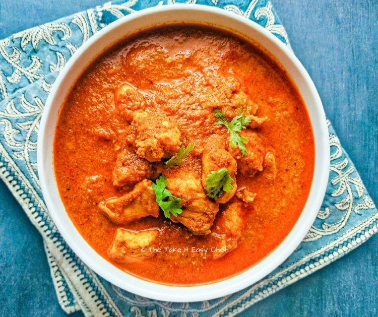

CHICKEN XACUTI 🍗

Description
Goan Chicken Xacuti is a traditional Goan curry made with roasted coconut and a rich blend of aromatic spices.
It has a deep, flavorful gravy and tender chicken pieces, best enjoyed with steamed rice or Goan pav.
Ingredients
Chicken
- 1 kg chicken, cut into medium pieces
- 2 onions, sliced
- 2 tomatoes, chopped
- 1 tsp turmeric powder
- 1 tsp salt (or to taste)
- 3 tbsp oil
- 1 cup water
Xacuti Masala Paste
- 1 cup grated coconut
- 6-8 dried red chilies
- 2 tsp coriander seeds
- 1 tsp cumin seeds
- 1 tsp poppy seeds
- 1/2 tsp black peppercorns
- 4 cloves
- 1-inch cinnamon stick
- 4 green cardamoms
- 1 star anise
- 6 cloves garlic
- 1-inch ginger
STEPS
- Masala: Dry roast coconut, red chilies, coriander seeds, cumin, poppy seeds, peppercorns,
cloves, cinnamon, cardamoms, and star anise until fragrant. Cool, then grind with garlic and ginger into a
smooth paste using a little water.
- Cook Chicken: Heat oil in a large pan, sauté onions until golden. Add tomatoes and cook
until soft. Stir in turmeric and salt, then add chicken pieces. Fry for 3-4 minutes.
- Add Masala & Simmer: Add the prepared xacuti masala paste, mix well, and cook for 5
minutes. Pour in water, bring to a boil, then reduce heat and simmer for 20-25 minutes until chicken is
tender and gravy thickens.
- Serve: Serve hot with steamed rice or Goan pav.

HOME